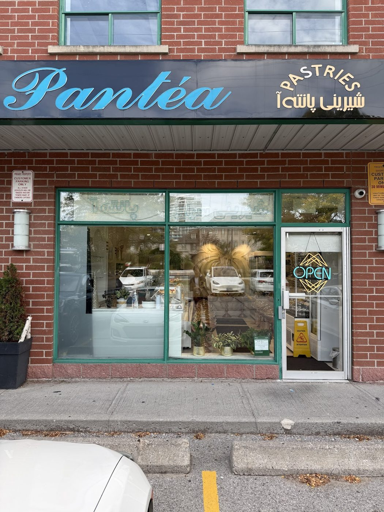
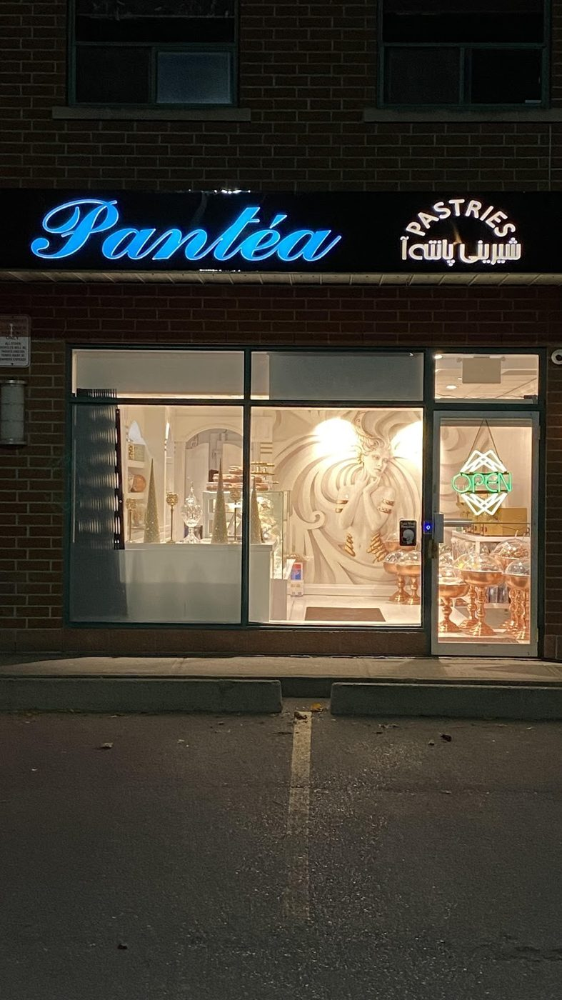

Yonge Street · Richmond Hill
Persian pastries on Yonge Street.
Pantéa Pastries is at 8910 Yonge St, Unit 6, in Richmond Hill, north of Highway 7. Google lists it as a bakery. The shop’s own signs and boxes spell the name Pantéa; Google writes Pantea, without the accent. Reviewers write about fresh pastries, dried fruit, and staff who take care with gift wrapping.
- Persian bakery
- 4.8 from 297 Google reviews
- Yonge Street, Richmond Hill
- Takeout
What’s in the shop
Pastries and sweets
Reviewers write about fresh pastries and “perfectly balanced sweetness.” Topics Google highlights from reviews include persian pastries, pistachio cake, almond orange cake, mocha cake, halva, noon khamei and khoresh mast.
Cakes and gift boxes
The display case holds whole cakes, cream rolls and chocolates. Ali’s Google review describes Asal wrapping a dessert box to match a customer’s outfit. Listing photos also show branded gift boxes.
Dried fruit, nuts and tea
Listing photos show stands of nuts and dried fruit, and tins of loose-leaf tea. Imad Jawadi’s review mentions “the selection of premium dry fruits and pastries.” Google lists takeout, and a wheelchair-accessible parking lot.
These details come from the shop’s public Google listing (read Nov 26, 2026) and from the reviews quoted below. This page does not list prices.

A pastry shop on Yonge Street
The bakery is Unit 6 at 8910 Yonge St in Richmond Hill. Google lists no website of the shop’s own. Reviewers mention staff by name — Asal and Sahar — for wrapping, welcome and help at the counter.
Google’s listing, checked Nov 26, 2026, rates the bakery 4.8 from 297 reviews and shows takeout. Hours on other websites do not all match Google’s, so it is worth calling ahead.
What customers say
4.8 ★ from 297 Google reviews (checked Nov 26, 2026). Quotes are word for word. Each one says where it was read: on the Google listing itself, or on a public page that copies reviews.
★★★★★
Absolutely amazing pastry shop! The sweets were incredibly fresh, delicious, and beautifully made. You can truly taste the quality in every bite. A special shout-out to Asal, who was so kind, welcoming, and wonderful. Her excellent customer service made the experience even better. Highly recommend this place! Will definitely be back! ❤️
★★★★★
An Exceptional Persian Bakery!
A top-tier bakery experience in GTA IS Pantea Pastries. The shop is absolutely immaculate and beautifully maintained.
The selection of premium dry fruits and pastries is amazing. Everything looks fresh and tastes incredible.
What truly sets them apart from other Persian bakeries, however, is their perfectly balanced sweetness. The sugar levels in their pastries are noticeably lower, which allows the authentic flavors and high-quality ingredients to really shine through without being overwhelmingly sweet.A huge thank you to Sahar and Asal, who provided amazing service. They were so welcoming, attentive, and helpful, making the whole visit an absolute delight
I highly recommend Pantea Pastries to anyone craving high-quality, delicious treats. I will definitely be coming back!
★★★★★
I have been coming to Pantea pastries for quite some time and the quality of their sweets and service never cease to amaze me! Asal was such a huge help and when I asked to have the box of dessert wrapped, she suggested it be done with the same colours to match my outfit! Super pleased and will be back again! Thank you Asal! 🍯
★★★★★
I’ve been going to Pantea for the past two years, and they never disappoint! Their pastries are always incredibly fresh, delicious, and full of flavor. The customer service is outstanding, and the staff are always friendly and welcoming. It’s always a pleasure to visit. Highly recommended!
★★★★★
Absolutely amazing! The pastries and sweets were honestly some of the best I’ve ever had. Everything was fresh, delicious, beautifully made, and full of flavor. You can really tell that a lot of care and quality goes into every item. I loved everything I tried and will definitely be coming back again!
A special thank you to Sahar for the excellent service. She was incredibly friendly, welcoming, and attentive. She made the whole experience even better. Highly recommended! ⭐⭐⭐⭐⭐
Inside the bakery
Real photos from the bakery’s public Google listing, downloaded Nov 26, 2026. Photos that show price labels are not included. Tap to enlarge.
Visit Pantéa Pastries
8910 Yonge St, Unit 6
Richmond Hill, ON L4C 0L7
north of Highway 7
| Monday | 10 a.m.–9 p.m. |
|---|---|
| Tuesday | 10 a.m.–9 p.m. |
| Wednesday | 10 a.m.–9 p.m. |
| Thursday | 10 a.m.–9 p.m. |
| Friday | 10 a.m.–9:30 p.m. |
| Saturday | 10 a.m.–9:30 p.m. |
| Sunday | 10 a.m.–8 p.m. |
These hours are from the shop’s Google listing, read Nov 26, 2026: Monday to Thursday 10 a.m.–9 p.m., Friday and Saturday 10 a.m.–9:30 p.m., Sunday 10 a.m.–8 p.m. Other directories disagree — Restaurantji lists Wednesday and Thursday until 9:30 p.m. and Sunday until 9 p.m., and Professionelle lists different weekday and weekend times — so please call (905) 597-6607 to confirm before you visit.